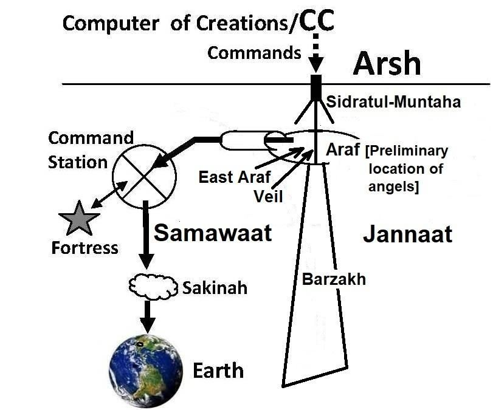

―And built over you Seven Skies‖ [Al Quran 79:12]
"এবং তোমাদের উপর নির্মিত সাত আকাশ" [আল কুরআন 79:12]
In light of above verse, a man in India has Seven Skies over his head. At the same time, a man in America has Seven Skies over his head. Therefore, we are in the Innermost (First) Sky. The Skies are seven super-giant spherical waves of space, one inside another—like the peels of onions. It is deliberately discussed in Section-7 of Chapter-2. If the skies are waves of space, it should be difficult to move through the skies, except through the channels. I think that the main pair of channels, coming down from the East Araf, runs through the Axis of the universe. Some scientists predict that the Big Bang was spinning. As the universe expanded, the net angular momentum has dissipated among the galaxies. If the Big Bang was spinning, the universe has an axis, and it may be rotating now as well, relative to other universes in higher dimensional space (Super Space). ―For the past few years, Professor Longo has worked primarily in astrophysics, in particular, analyzing data from the Sloan Digital Sky Survey (SDSS). This has led to strong evidence for a cosmic parity violation in the Universe, as indicated by a statistically significant excess of left-handed spiral galaxies toward the North Galactic Pole and an excess of right-handed in the opposite direction. This also suggests that our Universe has a preferred axis and a net angular momentum. Since angular momentum is conserved this means the Universe must have been born spinning. We can't see outside of our Universe, so we'd have to assume it is spinning relative to other universes in a higher dimensional space. Presumably the Big Bang was spinning initially, and as it expanded, the net angular momentum was dissipated among the galaxies. Now we still see it through the preferred spin direction.‖ – ―Detection of a Dipole in the Handedness of Spiral Galaxies with Red shifts z ~0.04, Michael J. Longo, Phys. Lett. B 699, 224-229 (2011). Moreover, according to the Quran, the universe is rolling in the process of collapse. A universe with rolling skies should have an Axis. A seven-sky-universe should be 10 to 14 billion light years in diameter. So, an angel coming down from Sidratul-Muntaha should take 5 to 7 billion years to reach the Earth, if it moves at the speed of light. How the CCU can interact with the earthly affairs? How the angels were coming to Prophet Muhammad (pbuh) frequently? To answer, the angels monitor according to the preplanned fates. The angels that are coming today were released from Sidratul-Muntaha at a due time in the past. They were staged forwarded on a timescale through Command Stations, Fortresses, and Sakinahs, discussed below. So, the distance does not matter. Moreover, the transportation through the channels may be faster than light, and the time may be different in the channels.
উপরের আয়াতের আলোকে, ভারতে একজন ব্যক্তির মাথার উপরে সাতটি আকাশ রয়েছে। একই সময়ে, আমেরিকার একজন ব্যক্তির মাথার উপর সাতটি আকাশ রয়েছে। অতএব, আমরা অন্তরতম (প্রথম) আকাশে আছি। আকাশ হল মহাকাশের সাতটি অতি-দৈত্য গোলাকার তরঙ্গ, একটির ভিতরে একটি-পেঁয়াজের খোসার মতো। এটি পরিকল্পিতভাবে অধ্যায়-2 এর ধারা-7 এ আলোচনা করা হয়েছে। যদি আকাশগুলি স্থানের তরঙ্গ হয় তবে চ্যানেলগুলি ব্যতীত আকাশের মধ্য দিয়ে চলাচল করা কঠিন হওয়া উচিত। আমি মনে করি যে চ্যানেলগুলির প্রধান জোড়া, পূর্ব আরাফ থেকে নেমে আসা, মহাবিশ্বের অক্ষের মধ্য দিয়ে চলে। কিছু বিজ্ঞানী ভবিষ্যদ্বাণী করেছেন যে বিগ ব্যাং ঘুরছিল। মহাবিশ্ব প্রসারিত হওয়ার সাথে সাথে নেট কৌণিক ভরবেগ ছায়াপথগুলির মধ্যে ছড়িয়ে পড়েছে। যদি বিগ ব্যাং ঘূর্ণায়মান ছিল, মহাবিশ্বের একটি অক্ষ আছে, এবং এটি এখনও ঘূর্ণায়মান হতে পারে, উচ্চমাত্রিক স্থানের (সুপার স্পেস) অন্যান্য মহাবিশ্বের তুলনায়। - গত কয়েক বছর ধরে, প্রফেসর লংগো প্রাথমিকভাবে জ্যোতির্পদার্থবিদ্যায় কাজ করেছেন, বিশেষ করে, স্লোন ডিজিটাল স্কাই সার্ভে (SDSS) থেকে ডেটা বিশ্লেষণ করে৷ এটি মহাবিশ্বে মহাজাগতিক সমতা লঙ্ঘনের জন্য শক্তিশালী প্রমাণের দিকে পরিচালিত করেছে, যেমনটি উত্তর গ্যালাকটিক মেরুতে বাম-হাতের সর্পিল ছায়াপথগুলির একটি পরিসংখ্যানগতভাবে উল্লেখযোগ্য আধিক্য এবং বিপরীত দিকে ডান হাতের আধিক্য দ্বারা নির্দেশিত হয়েছে। এটি আরও পরামর্শ দেয় যে আমাদের মহাবিশ্বের একটি পছন্দের অক্ষ এবং একটি নেট কৌণিক ভরবেগ রয়েছে। যেহেতু কৌণিক ভরবেগ সংরক্ষিত আছে এর মানে হল মহাবিশ্ব অবশ্যই ঘুরতে ঘুরতে জন্মগ্রহণ করেছে। আমরা আমাদের মহাবিশ্বের বাইরে দেখতে পারি না, তাই আমাদের ধরে নিতে হবে এটি একটি উচ্চমাত্রিক স্থানের অন্যান্য মহাবিশ্বের তুলনায় ঘূর্ণায়মান। সম্ভবত বিগ ব্যাং প্রাথমিকভাবে ঘুরছিল, এবং এটি প্রসারিত হওয়ার সাথে সাথে নেট কৌণিক ভরবেগ ছায়াপথগুলির মধ্যে ছড়িয়ে পড়েছিল। এখন আমরা এখনও পছন্দের ঘূর্ণনের দিক দিয়ে এটি দেখতে পাই।'' - - রেড শিফ্ট z ~0.04 সহ স্পাইরাল গ্যালাক্সির হাতে একটি ডাইপোল সনাক্তকরণ, মাইকেল জে লংগো, ফিজ। লেট. বি 699, 224-229 (2011)। তাছাড়া, কোরান অনুসারে, মহাবিশ্ব পতনের প্রক্রিয়ায় ঘূর্ণায়মান। ঘূর্ণায়মান আকাশ সহ একটি মহাবিশ্বের একটি অক্ষ থাকা উচিত। একটি সাত-আকাশ-মহাবিশ্বের ব্যাস 10 থেকে 14 বিলিয়ন আলোকবর্ষ হওয়া উচিত। সুতরাং, সিদরাতুল মুনতাহা থেকে নেমে আসা একজন ফেরেশতাকে পৃথিবীতে পৌঁছাতে 5 থেকে 7 বিলিয়ন বছর সময় লাগবে, যদি এটি আলোর গতিতে চলে। কিভাবে সিসিইউ পার্থিব বিষয়ের সাথে যোগাযোগ করতে পারে? কিভাবে ফেরেশতারা নবী মুহাম্মদ (সাঃ) এর কাছে ঘন ঘন আসছিল? উত্তর দেওয়ার জন্য, ফেরেশতারা পূর্বপরিকল্পিত ভাগ্য অনুসারে পর্যবেক্ষণ করেন। আজ যে ফেরেশতারা আসছেন তারা অতীতে নির্ধারিত সময়ে সিদরাতুল মুনতাহা থেকে মুক্তি পেয়েছিলেন। কমান্ড স্টেশন, দুর্গ এবং সাকিনাহগুলির মাধ্যমে তাদের একটি টাইমস্কেলে মঞ্চস্থ করা হয়েছিল, নীচে আলোচনা করা হয়েছে। সুতরাং, দূরত্ব কোন ব্যাপার না. তদুপরি, চ্যানেলগুলির মাধ্যমে পরিবহন আলোর চেয়ে দ্রুততর হতে পারে এবং চ্যানেলগুলিতে সময় ভিন্ন হতে পারে।
5f. Command Station
5f. কমান্ড স্টেশন
There are seven Command Stations in seven skies. It is said in the following verse:
সাত আকাশে সাতটি কমান্ড স্টেশন রয়েছে। নিম্নোক্ত আয়াতে বলা হয়েছে:
―Allah is He Who created seven skies and the lands an equivalent (seven). Through the midst of them descends His command that ye may know that Allah has power over all things, and that comprehends all things in knowledge.‖ [Al Quran 65:12]
-আল্লাহ তিনিই সৃষ্টি করেছেন সাত আসমান ও ভূমি সমতুল্য। তাদের মধ্য দিয়ে তাঁর হুকুম অবতীর্ণ হয় যাতে তোমরা জানতে পার যে, আল্লাহ সব কিছুর উপর ক্ষমতাবান এবং তিনি সবকিছুকে জ্ঞানে পরিপূর্ণ করেন।'' [আল কুরআন 65:12]
I call these lands 'Command Stations' because the lands are meant to descend the commands of God. In the Quran, it is called ―Lofty Station‖:
আমি এই ভূমিগুলিকে 'কমান্ড স্টেশন' বলি কারণ জমিগুলি ঈশ্বরের আদেশ অবতরণ করার জন্য। কুরআনে একে বলা হয়েছে ‘উচ্চ স্থান’:
―Also mention in the Book the case of Idris: He was a man of truth, a prophet. And We raised him to a Lofty Station.‖ [Al Quran 19: 56-57]
এছাড়াও কিতাবে ইদ্রিসের ঘটনা উল্লেখ করুনঃ তিনি ছিলেন একজন সত্যবাদী, একজন নবী। এবং আমরা তাকে একটি সুউচ্চ স্থানে উন্নীত করেছি।'' [আল কুরআন 19: 56-57]
Each Command Station may comprise necessary number of astral objects to perform its function. It could be an entire galaxy with a central super-massive black hole located at the axis of the universe. The Arch Angel of a Sky leads from an object (land) of the Command Station. The Arch Angel of the First (Innermost) Sky is called Michael. During the Night Journey (Miraz), Prophet (pbuh) saw several Prophets in the planets of the Command Stations. He saw Adam in the Command Station of the First Sky, Jesus in the Second Sky, Moses in the Sixth Sky, Abraham in the Seventh Sky. He saw several other Prophets as well. A Command Station receives, preserves, and passes on the data coming from the CCU via Sidratul-Muntaha. Therefore, it is likely that a Command Station has server- like systems. The angels may bring data from Sidratul- Muntaha and store it in these servers. Or, the data may arrive independently through channels and sub-channels. The data may also be transferred to a Command Station using the Quantum Teleportation technique. In quantum reality, in many cases, two distinct physical systems are characterized by a single state in such a way that if one characterizes the state of one part, must refer to the state of the other part. Therefore, information can be transferred instantly. If one is writing in a Quantum Teleportation Component of Sidratul-Muntaha, the same action is simultaneously being carried out in its counterpart within the Command Station that is situated billions of light-years away. It is proved in 1982 through an experiment carried out by Alain Aspect and his team. The experiment provides strong evidence that even at great distances the entangled atomic particles remain connected to one another. It shows that quantum event at one location can affect an event at another location without any obvious mechanism for communication between two locations. It is likely that there are 19 Command Stations and Arch Angels: a. Seven in this Universe (one in each Sky). b. Eight in the Jannaat (one in each level). c. Two in the Araf (Angel Malek in the East Araf and Angel Rizwan in the West Araf). d. One commands the Illiyin. e. One commands the Sijjin. Near the boundary of the universe (Samawaat), the pair of channels descending from the East Araf divides into seven pairs of sub-channels, which run along the Axis of the Universe (Samawaat) to connect the Command Stations of the Skies.
প্রতিটি কমান্ড স্টেশনে তার কার্য সম্পাদনের জন্য প্রয়োজনীয় সংখ্যক অ্যাস্ট্রাল অবজেক্ট থাকতে পারে। এটি মহাবিশ্বের অক্ষে অবস্থিত একটি কেন্দ্রীয় সুপার-ম্যাসিভ ব্ল্যাক হোল সহ একটি সম্পূর্ণ গ্যালাক্সি হতে পারে। একটি আকাশের আর্চ এঞ্জেল কমান্ড স্টেশনের একটি বস্তু (ভূমি) থেকে নেতৃত্ব দেয়। প্রথম (অভ্যন্তরীণ) আকাশের আর্চ এঞ্জেলকে মাইকেল বলা হয়। নাইট জার্নি (মিরাজ) চলাকালীন, নবী (সাঃ) কমান্ড স্টেশনের গ্রহগুলিতে বেশ কয়েকজন নবীকে দেখেছিলেন। তিনি প্রথম আকাশের কমান্ড স্টেশনে আদমকে, দ্বিতীয় আকাশে যীশুকে, ষষ্ঠ আকাশে মুসাকে, সপ্তম আকাশে আব্রাহামকে দেখেছিলেন। তিনি আরও বেশ কয়েকজন নবীকেও দেখেছেন। একটি কমান্ড স্টেশন সিদরাতুল-মুনতাহার মাধ্যমে CCU থেকে আসা ডেটা গ্রহণ করে, সংরক্ষণ করে এবং পাস করে। অতএব, সম্ভবত একটি কমান্ড স্টেশনে সার্ভারের মতো সিস্টেম রয়েছে। ফেরেশতারা সিদরাতুল মুনতাহা থেকে ডেটা আনতে পারে এবং এই সার্ভারগুলিতে সংরক্ষণ করতে পারে। অথবা, ডেটা চ্যানেল এবং সাব-চ্যানেলের মাধ্যমে স্বাধীনভাবে আসতে পারে। কোয়ান্টাম টেলিপোর্টেশন কৌশল ব্যবহার করে একটি কমান্ড স্টেশনেও ডেটা স্থানান্তর করা যেতে পারে। কোয়ান্টাম বাস্তবতায়, অনেক ক্ষেত্রে, দুটি স্বতন্ত্র ভৌত ব্যবস্থা একটি একক অবস্থার দ্বারা এমনভাবে চিহ্নিত করা হয় যে যদি কেউ একটি অংশের অবস্থাকে চিহ্নিত করে তবে অবশ্যই অন্য অংশের অবস্থাকে নির্দেশ করতে হবে। অতএব, তথ্য তাত্ক্ষণিকভাবে স্থানান্তর করা যেতে পারে। যদি কেউ সিদরাতুল-মুনতাহার কোয়ান্টাম টেলিপোর্টেশন কম্পোনেন্টে লিখতে থাকে, একই সাথে একই ক্রিয়াটি কোটি কোটি আলোকবর্ষ দূরে অবস্থিত কমান্ড স্টেশনের মধ্যে তার কাউন্টারপার্টে করা হচ্ছে। এটি 1982 সালে অ্যালাইন অ্যাসপেক্ট এবং তার দল দ্বারা পরিচালিত একটি পরীক্ষার মাধ্যমে প্রমাণিত হয়। পরীক্ষাটি শক্তিশালী প্রমাণ সরবরাহ করে যে এমনকি অনেক দূরত্বেও আটকে থাকা পারমাণবিক কণাগুলি একে অপরের সাথে সংযুক্ত থাকে। এটি দেখায় যে একটি অবস্থানে কোয়ান্টাম ইভেন্ট দুটি অবস্থানের মধ্যে যোগাযোগের জন্য কোন সুস্পষ্ট প্রক্রিয়া ছাড়াই অন্য অবস্থানের একটি ঘটনাকে প্রভাবিত করতে পারে। সম্ভবত 19টি কমান্ড স্টেশন এবং আর্চ এঞ্জেলস রয়েছে: ক. এই মহাবিশ্বে সাতটি (প্রতিটি আকাশে একটি)। খ. জান্নাতে আটটি (প্রতি স্তরে একজন)। গ. দুই আরাফে (পূর্ব আরাফে ফেরেশতা মালেক এবং পশ্চিম আরাফে ফেরেশতা রিজওয়ান)। d একজন ইল্লিয়িনকে নির্দেশ দেয়। e একজন সিজ্জিনকে নির্দেশ দেয়। মহাবিশ্বের সীমানার কাছে (সামাওয়াত), পূর্ব আরাফ থেকে নেমে আসা চ্যানেলের জোড়া সাত জোড়া সাব-চ্যানেলগুলিতে বিভক্ত, যা মহাবিশ্বের অক্ষ বরাবর চলে (সামাওয়াত) আকাশের কমান্ড স্টেশনগুলিকে সংযুক্ত করতে।
―And We have made above you Seven Tracts, and We are never unmindful of creation‖ [Al Quran 23: 17]
"এবং আমি তোমাদের উপরে সাতটি ভূখণ্ড তৈরি করেছি এবং আমরা সৃষ্টি সম্পর্কে কখনই উদাসীন নই" [আল কুরআন 23: 17]
A sub-channel (one of seven) connects the Command Station of a Sky. There are seven Command Stations in seven Skies. The galaxies within the Skies are connected to their respective Command Stations by sub-sub-channels. Within a galaxy, the objects are connected by sub- sub-sub-channels. For example, a sub-sub-sub-channel opens over the Temple Mount at a particular time at night, through which Prophet Muhammad (PBUH) was lifted up by Raf Raf during the Night Journey (Miraj). None can move out of this universe (Samawaat) without passing through these channels.
একটি সাব-চ্যানেল (সাতটির মধ্যে একটি) একটি আকাশের কমান্ড স্টেশনকে সংযুক্ত করে। সাত আকাশে সাতটি কমান্ড স্টেশন রয়েছে। আকাশের মধ্যে থাকা ছায়াপথগুলি সাব-সাব-চ্যানেল দ্বারা তাদের নিজ নিজ কমান্ড স্টেশনের সাথে সংযুক্ত থাকে। একটি ছায়াপথের মধ্যে, বস্তুগুলি সাব-সাব-সাব-চ্যানেল দ্বারা সংযুক্ত থাকে। উদাহরণস্বরূপ, রাতের একটি নির্দিষ্ট সময়ে টেম্পল মাউন্টের উপর একটি সাব-সাব-সাব-চ্যানেল খোলে, যার মাধ্যমে নবী মুহাম্মদ (সা.) রাতের যাত্রায় (মিরাজ) রাফ রাফ দ্বারা উপরে উঠানো হয়েছিল। এই চ্যানেলগুলি অতিক্রম না করে কেউ এই মহাবিশ্বের (সামাওয়াত) বাইরে যেতে পারে না।
―O ye assembly of Jinns and men, if it be ye can pass beyond the zones of the Skies and Lands (this Universe), pass ye! Not without authority shall ye be able to pass!‖ [Al Quran 55:33] The scientific community perceives the existence of such channels. They refer to the openings of these channels as Portals (X Points). Some scientists believe that entering a Portal could result in being transported to a vast distance in a short period of time.
হে জিন ও মানুষের দল, যদি তোমরা আসমান ও জমিনের (এই মহাবিশ্বের) অঞ্চল অতিক্রম করতে পারো, তবে তোমরা অতিক্রম কর! কর্তৃত্ব ছাড়া আপনি পাস করতে পারবেন না!'' [আল কুরআন 55:33] বৈজ্ঞানিক সম্প্রদায় এই জাতীয় চ্যানেলগুলির অস্তিত্ব উপলব্ধি করে। তারা এই চ্যানেলগুলির খোলাকে পোর্টাল (এক্স পয়েন্ট) হিসাবে উল্লেখ করে। কিছু বিজ্ঞানী বিশ্বাস করেন যে একটি পোর্টালে প্রবেশের ফলে অল্প সময়ের মধ্যে একটি বিশাল দূরত্বে পরিবহন করা হতে পারে।
5g. The Fortress
5 গ্রাম। দুর্গ
The angels, the ruhs (command-data) and the nafses (souls of living creatures to be born) of one thousand years are sent from the Sidratul-Muntaha in one group.
সিদরাতুল মুনতাহা থেকে এক হাজার বছরের ফেরেশতা, রুহ (আদেশ-ডেটা) এবং নফসেস (জন্মগ্রহণকারী জীবের আত্মা) পাঠানো হয়।
―Yet they ask thee to hasten on the Punishment! But God will not fail in His Promise. Verily, a Day in the Sight of thy Lord is like a thousand years of your reckoning.‖ [Al Quran 22:47]
--তবুও তারা তোমাকে শাস্তির জন্য তাড়াতাড়ি করতে বলে! কিন্তু ঈশ্বর তাঁর প্রতিশ্রুতিতে ব্যর্থ হবেন না। নিঃসন্দেহে, আপনার পালনকর্তার কাছে একটি দিন আপনার হিসাবের হাজার বছরের সমান।'' [আল কুরআন 22:47]
When the group comes down to the Command Station, the ruhs (electro-magnetic information / commands emitted by CCU and amplified by Sidratul-Muntaha) are preserved in the Server, the nafses are accommodated in a special store, and the angels are accommodated in the Fortresses. The Fortresses are stars or star-like objects. The angels are created from the light. So, they remain energetic in the stars or star-like objects.
যখন দলটি কমান্ড স্টেশনে নেমে আসে, তখন রুহস (সিসিইউ দ্বারা নির্গত এবং সিদরাতুল-মুন্তাহা দ্বারা পরিবর্ধিত) রূহ (ইলেক্ট্রো-ম্যাগনেটিক তথ্য / কমান্ড) সার্ভারে সংরক্ষিত হয়, নফসেগুলিকে একটি বিশেষ দোকানে স্থান দেওয়া হয় এবং ফেরেশতাদের দুর্গগুলিতে স্থান দেওয়া হয়। দুর্গগুলি তারা বা তারার মতো বস্তু। ফেরেশতাদেরকে নূর থেকে সৃষ্টি করা হয়েছে। সুতরাং, তারা নক্ষত্র বা তারার মতো বস্তুতে শক্তিমান থাকে।
That He is the Lord of Sirius (a Star). And that it is He Who destroyed the ancient 'Ad‘. And Thamud, nor gave them a lease of perpetual life. And before them, the people of Noah, for that they were most unjust and most insolent transgressors. And He destroyed the Overthrown Cities. [Al Quran 53: 49–53]
যে তিনি সিরিয়াস (একটি তারকা) এর প্রভু। এবং তিনিই প্রাচীন 'আদ'কে ধ্বংস করেছেন। এবং সামুদও তাদের চিরস্থায়ী জীবনের ইজারা দেয়নি। এবং তাদের পূর্বে নূহের সম্প্রদায়, কারণ তারা ছিল সবচেয়ে অন্যায়কারী ও চরম সীমালংঘনকারী। এবং তিনি উচ্ছেদ করা শহরগুলিকে ধ্বংস করেছিলেন। [আল কুরআন 53: 49-53]
The Sirius (Sirius A) is the brightest star visible to the naked eye. The verses mentioned above discuss several destroyed nations after noting that Allah is the Lord of Sirius. This implies that Sirius is the Fortress of angels who destroyed the nations. A Command Station is a galaxy or galaxy-like system. There are many Fortresses under each Command Station. CCU, Sidratul-Muntaha, and Araf are located beyond the Samawaat (this universe). Satan and his follower jinns cannot go there. But, the Command Stations, including the Fortresses, are in the Samawaat. The satanic jinns can access these locations and gain information through stealth. But, they are soon driven away.
সিরিয়াস (সিরিয়াস এ) হল সবচেয়ে উজ্জ্বল নক্ষত্র যা খালি চোখে দেখা যায়। উপরে উল্লিখিত আয়াতে আল্লাহ সিরিয়াস প্রভু যে উল্লেখ করার পরে বেশ কয়েকটি ধ্বংসপ্রাপ্ত জাতি সম্পর্কে আলোচনা করা হয়েছে। এটি বোঝায় যে সিরিয়াস হল ফেরেশতাদের দুর্গ যারা জাতিগুলিকে ধ্বংস করেছিল। একটি কমান্ড স্টেশন হল একটি গ্যালাক্সি বা গ্যালাক্সির মতো সিস্টেম। প্রতিটি কমান্ড স্টেশনের অধীনে অনেকগুলি দুর্গ রয়েছে। সিসিইউ, সিদরাতুল মুনতাহা এবং আরাফ সামাওয়াতের (এই মহাবিশ্বের) বাইরে অবস্থিত। শয়তান ও তার অনুসারী জিনরা সেখানে যেতে পারে না। কিন্তু, দুর্গসহ কমান্ড স্টেশনগুলো সামওয়াতে রয়েছে। শয়তান জ্বীনরা এসব অবস্থানে প্রবেশ করতে পারে এবং গোপন তথ্য অর্জন করতে পারে। কিন্তু, শীঘ্রই তাদের তাড়িয়ে দেওয়া হয়।
―It is We who have set out Fortresses in the Skies and made them fair-seeming to beholders, and We have guarded them from every satan accursed. But any that gains a hearing by stealth is pursued by a flaming fire, bright‖ [Al Quran 15: 16–18]
- আমরাই আকাশে দুর্গ স্থাপন করেছি এবং সেগুলোকে দর্শকদের কাছে সুন্দর করে দিয়েছি এবং প্রত্যেক অভিশপ্ত শয়তান থেকে তাদের হেফাজত করেছি। কিন্তু যে কেউ চুপিসারে শ্রবণশক্তি অর্জন করে তার পিছনে জ্বলন্ত আগুন, উজ্জ্বল” [আল কুরআন 15:16-18]
―And that we sometimes used to sit in some places in the sky to listen. So, whoever now listens finds a fiery asteroid waiting for him.‖ [Al Quran 72:9] The jinns are primarily interested in the immediate future. They pass this information to people who are enemies of Islam, practice black magic, foretell the future, and so forth. The satanic jinns whisper the information into their hearts.
-আর আমরা মাঝে মাঝে আকাশের কিছু জায়গায় বসে শুনতাম। সুতরাং, যে এখন শোনে সে তার জন্য অপেক্ষা করছে একটি অগ্নিগর্ভ গ্রহাণু খুঁজে পায়।'' [আল কুরআন 72:9] জিনরা প্রাথমিকভাবে অদূর ভবিষ্যতের প্রতি আগ্রহী। তারা এই তথ্যগুলি এমন লোকদের কাছে পৌঁছে দেয় যারা ইসলামের শত্রু, কালো জাদু অনুশীলন করে, ভবিষ্যতের ভবিষ্যদ্বাণী করে এবং আরও অনেক কিছু। শয়তান জিনরা তাদের অন্তরে তথ্যগুলো ফিসফিস করে।
―Say: I seek refuge with the Lord of mankind, the King of mankind, the God of mankind from the mischief of the Whisperer (Jinns), who withdraws, who whispers into the chests of mankind- among jinns and among men.‖ [Al Quran 114]
"বলুন: আমি মানবজাতির পালনকর্তা, মানবজাতির রাজা, মানবজাতির ঈশ্বরের কাছে আশ্রয় চাই ফিসফাসকারী (জিন) এর ফিতনা থেকে, যিনি প্রত্যাহার করেন, যিনি মানবজাতির বুকে ফিসফিস করেন- জিন এবং মানুষের মধ্যে।" [আল কুরআন 114]
5h. Sakinah (Indwelling)
5 ঘন্টা। সাকিনাহ (অভ্যন্তরীণ)
A Sky spans millions of light-years across, but it has only one Command Station and necessary number of fortresses in close proximity. Therefore, the angels, ruhs, and nafses needed in different regions of the sky for one thousand months are grouped together and moved ahead well in advance so that they can operate at the predetermined times. The angels, ruhs, and nafses of a Sky arrive at a Command Station in the group of one thousand years, but they are dispatched to their regions in the groups of one thousand months (approximately 83 earthly years). The grouping of one thousand months is done at the Command Station. The related angels of a group are returned from the fortresses and grouped with appropriate ruhs and nafses. The group is placed into a 'Sakinah,' which is then moved into its region and harbored near a job station, such as Planet Earth. ―A certain man (Sahabi) was reciting Surah Al- Qahf by his tethered horse. As he was reciting, a cloud engulfed him, which was encircling and descending, whose sight caused his horse to jump and move. When morning came, he went to Muhammad (pbuh) and informed him of what occurred. Muhammad (pbuh) replied that it was the Sakinah that has descended with the Quran‖ [Muslim]
একটি আকাশ লক্ষ লক্ষ আলোকবর্ষ জুড়ে বিস্তৃত, তবে এটির কাছে মাত্র একটি কমান্ড স্টেশন এবং প্রয়োজনীয় সংখ্যক দুর্গ রয়েছে। অতএব, এক হাজার মাসের জন্য আকাশের বিভিন্ন অঞ্চলে প্রয়োজনীয় ফেরেশতা, রুহ এবং নফসেসকে একত্রিত করা হয় এবং আগে থেকেই অগ্রসর করা হয় যাতে তারা পূর্বনির্ধারিত সময়ে কাজ করতে পারে। একটি আকাশের ফেরেশতা, রুহ এবং নফসেরা এক হাজার বছরের দলে একটি কমান্ড স্টেশনে পৌঁছায়, কিন্তু তাদের এক হাজার মাসের দলে (প্রায় 83 পার্থিব বছর) তাদের অঞ্চলে প্রেরণ করা হয়। এক হাজার মাসের গ্রুপিং করা হয় কমান্ড স্টেশনে। একটি দলের সংশ্লিষ্ট ফেরেশতাদের দুর্গ থেকে ফিরিয়ে আনা হয় এবং উপযুক্ত রুহ ও নফসেস দিয়ে দলবদ্ধ করা হয়। দলটিকে একটি 'সাকিনাহ'-তে স্থাপন করা হয়, যা পরে তার অঞ্চলে স্থানান্তরিত হয় এবং প্ল্যানেট আর্থের মতো একটি জব স্টেশনের কাছে আশ্রয় দেওয়া হয়। - এক ব্যক্তি (সাহাবী) তার বাঁধা ঘোড়ায় সূরা আল কাহফ পাঠ করছিলেন। তিনি যখন আবৃত্তি করছিলেন, তখন একটি মেঘ তাকে ঘিরে ধরল, যা ঘিরে এবং নীচে নামছিল, যা দেখে তার ঘোড়াটি লাফিয়ে উঠছিল এবং নড়াচড়া করেছিল। সকাল হলে তিনি মুহাম্মাদ (সাঃ)-এর কাছে গেলেন এবং যা ঘটেছে তা তাঁকে জানালেন। মুহাম্মাদ (সাঃ) উত্তর দিলেন যে সাকিনাই কুরআনের সাথে অবতীর্ণ হয়েছে” [মুসলিম]
Sakinah means indwelling. It is an invisible domain of angels where Allah is close to guide them, if needed. It is like a cloud carrying the angels. If a Sakinah is nearby, one feels weak and falls asleep. This is a security measure of the Sakinah against jinns trying to gain information. However, this characteristic was also used to calm the Sahabah after the Battle of Uhud. From the Sakinah, the angels—sometimes with ruhs and nafses—move to their job destinations day by day, individually or in small groups. A new Sakinah comes near the Earth on a Night of Power/Destiny (Lailatul-Qadr).
সাকিনাহ মানে নিবাস। এটি ফেরেশতাদের একটি অদৃশ্য ডোমেন যেখানে প্রয়োজন হলে আল্লাহ তাদের পথপ্রদর্শনের কাছাকাছি। এটি একটি মেঘের মতো যা ফেরেশতাদের বহন করে। সাকিনা কাছাকাছি থাকলে একজন দুর্বল বোধ করে এবং ঘুমিয়ে পড়ে। এটি জ্বিনদের বিরুদ্ধে সাকিনার একটি নিরাপত্তা ব্যবস্থা যা তথ্য লাভের চেষ্টা করছে। যাইহোক, এই বৈশিষ্ট্যটি উহুদ যুদ্ধের পরে সাহাবাদের শান্ত করার জন্যও ব্যবহৃত হয়েছিল। সাকিনা থেকে, ফেরেশতারা - কখনও কখনও রুহ এবং নফসে নিয়ে - দিনে দিনে পৃথকভাবে বা ছোট দলে তাদের কাজের গন্তব্যে চলে যায়। শক্তি/ভাগ্যের রাতে (লাইলাতুল-কদর) পৃথিবীর কাছাকাছি একটি নতুন সাকিনাহ আসে।
―The Night of Power (Lailatul-Qadr) is better than a thousand months. Therein come down the angels and the ruhs by Allah‘s permission for every work.‖ [Al Quran 97:3-4] FIGURE 6.5: The Cybernetic System showing the Part covering this universe (Samawaat)

চিত্র 6_5 / Figure 6_5
- কদরের রাত (লাইলাতুল কদর) হাজার মাসের চেয়েও উত্তম। সেখানে প্রতিটি কাজের জন্য আল্লাহর অনুমতিক্রমে ফেরেশতা এবং রুহ নেমে আসে।'' [আল কুরআন 97:3-4] চিত্র 6.5: সাইবারনেটিক সিস্টেম এই মহাবিশ্বকে আচ্ছাদিত অংশটি দেখাচ্ছে (সামাওয়াত)
চিত্র 6_5 / Figure 6_5
The whole System becomes clear if we discuss how the Quran was descended: The Quran was written and preserved in the Lawh- Mahfuz. The verses of the Quran were sent to Sidratul- Muntaha, which programmed the angels to deliver the verses. The angels, along with the verses in the form of ruhs (electromagnetic brain data), were grouped into a thousand-year cohort. This group moved through the Channels and descended into the Command Station of the First (Innermost) Sky. The Command Station preserved the verses in a server and the angels in a nearby fortress. In due time, the package of the Quran (angels and ruhs) was placed into a Sakinah, which was then sent near the Earth. From the Sakinah, the angels with the related verses came to Prophet Muhammad (pbuh) day by day. After performing the assigned task, an angel returns directly to the Command Station and enters the feedback into a server. The feedback is then sent to the CCU via Sidratul-Muntaha. Afterward, the angel moves to a Retiring Fortress.
পুরো সিস্টেমটি পরিষ্কার হয়ে যায় যদি আমরা আলোচনা করি যে কীভাবে কুরআন অবতীর্ণ হয়েছিল: কুরআন লহ-মাহফুজে লিখিত এবং সংরক্ষিত ছিল। কুরআনের আয়াতগুলি সিদরাতুল মুনতাহাতে পাঠানো হয়েছিল, যা আয়াতগুলি বিতরণ করার জন্য ফেরেশতাদের প্রোগ্রাম করেছিল। রূহ (ইলেক্ট্রোম্যাগনেটিক মস্তিষ্কের ডেটা) আকারে আয়াত সহ ফেরেশতাদেরকে হাজার বছরের দলে বিভক্ত করা হয়েছিল। এই দলটি চ্যানেলের মধ্য দিয়ে চলে যায় এবং প্রথম (অন্তঃস্থ) আকাশের কমান্ড স্টেশনে নেমে আসে। কমান্ড স্টেশন একটি সার্ভারে আয়াত এবং নিকটবর্তী দুর্গে ফেরেশতাদের সংরক্ষণ করে। যথাসময়ে, কুরআনের প্যাকেজটি (ফেরেশতা এবং রুহ) একটি সাকিনাতে স্থাপন করা হয়েছিল, যা তখন পৃথিবীর কাছাকাছি পাঠানো হয়েছিল। সাকিনা থেকে, সম্পর্কিত আয়াত সহ ফেরেশতারা দিনে দিনে হযরত মুহাম্মদ (সাঃ)-এর কাছে আসতেন। নির্ধারিত কাজটি সম্পাদন করার পরে, একজন দেবদূত সরাসরি কমান্ড স্টেশনে ফিরে আসে এবং একটি সার্ভারে প্রতিক্রিয়া প্রবেশ করে। এরপর সিদরাতুল মুনতাহার মাধ্যমে সিসিইউতে ফিডব্যাক পাঠানো হয়। পরে, দেবদূত একটি অবসরপ্রাপ্ত দুর্গে চলে যান।